홈 모바일
/ · 390px · HTTP 200
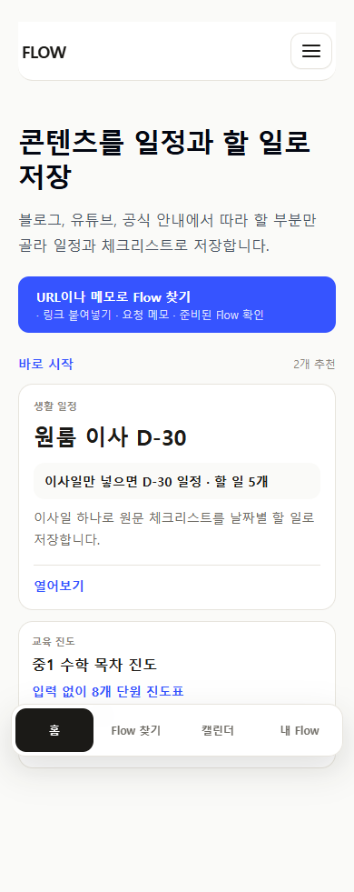
2026-07-12 · 현재 소스 기준
오래된 페이지를 단순 삭제하지 않고 공개 승인, 검토 게이트, 내부 생성 샘플로 나눠 실제 사용자 노출 경계를 확인합니다.
승인 Flow만 정상 카탈로그와 공개 제작자 프로필에 노출한다. 검토 게이트는 direct noindex로만 남기고 예전 실행 문구·일정·체크 항목과 저장/export 행동을 숨긴다. 미저장 archive는 runtime에서 제거하고, 저장한 archive는 완료·메모가 남는 이전 저장본으로 보존한다.
/ · 390px · HTTP 200

/ · 1024px · HTTP 200

/flows · 390px · HTTP 200
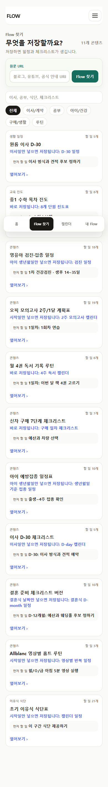
/flows · 1024px · HTTP 200
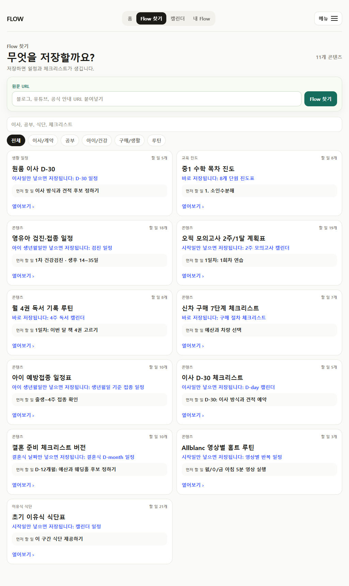
/f/vehicle-inspection-prep · 390px · HTTP 200
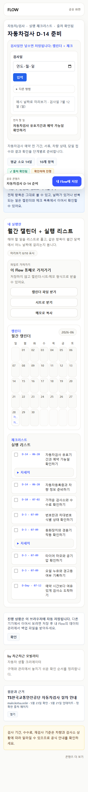
/f/vehicle-inspection-prep · 1024px · HTTP 200
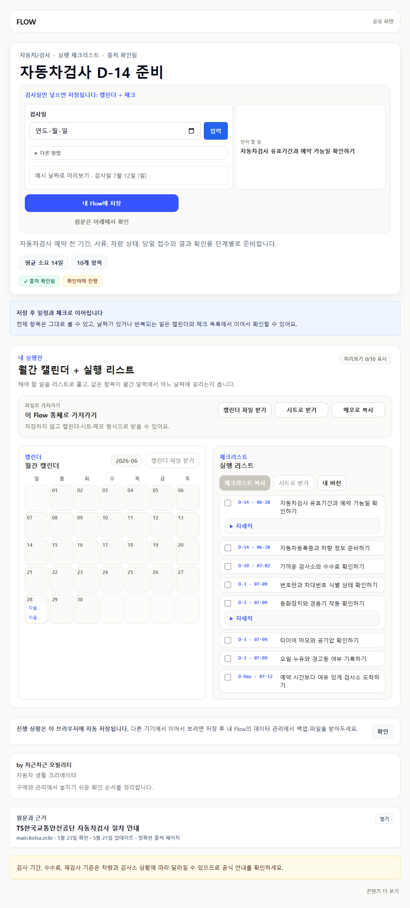
/f/housing-subscription-account · 390px · HTTP 200
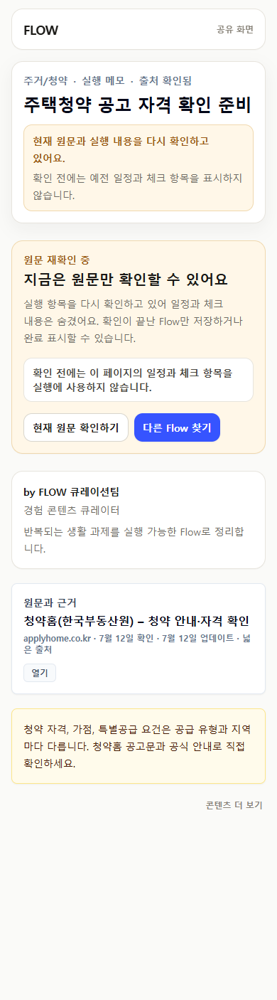
/f/housing-subscription-account · 1024px · HTTP 200
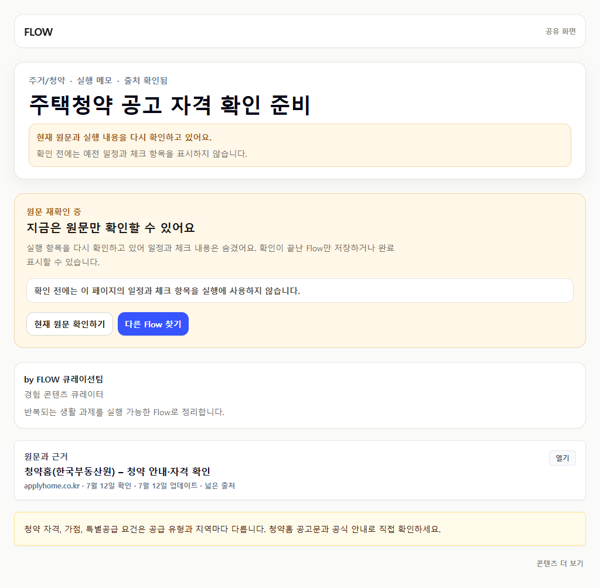
/u/flow-curation-team · 390px · HTTP 200
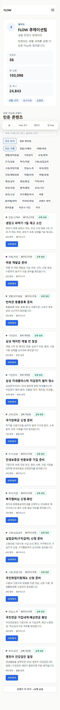
/u/flow-curation-team · 1024px · HTTP 200
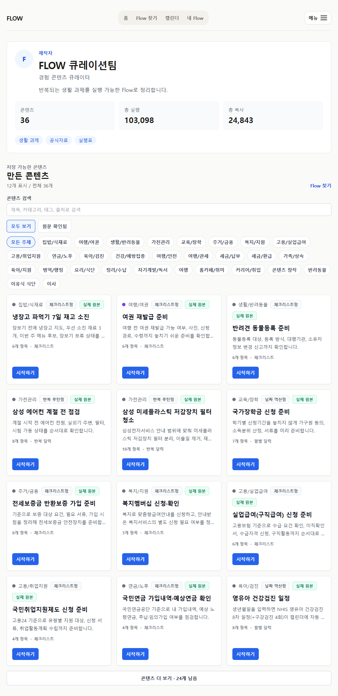
/u/samsung-service · 390px · HTTP 200
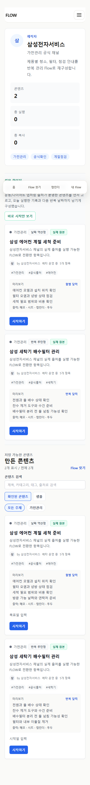
/u/samsung-service · 1024px · HTTP 200
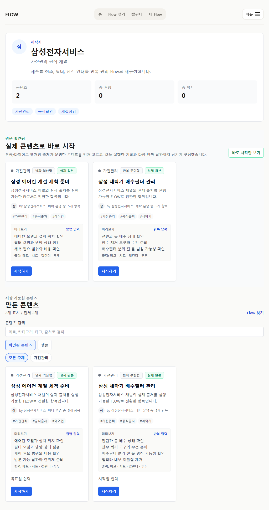
/creators · 390px · HTTP 200
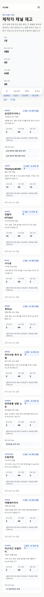
/creators · 1024px · HTTP 200
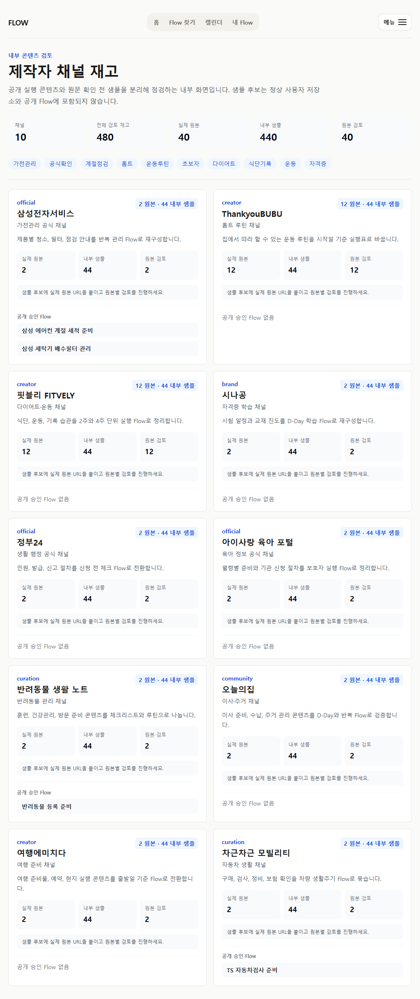
공개 shell 없이 HTTP 404
공개 shell 없이 HTTP 404

대체 route는 HTTP 200으로 유지
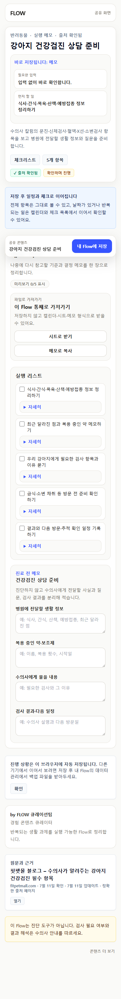
카탈로그와 direct route에서 현재 source-backed Map을 사용
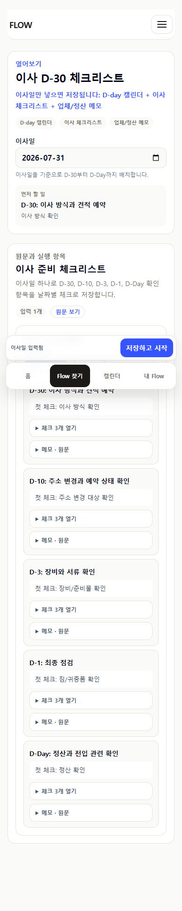
정상 사용자 진입점에서 제거하고 direct route는 HTTP 404

완료와 메모는 보존하고 새 실행에서는 제외
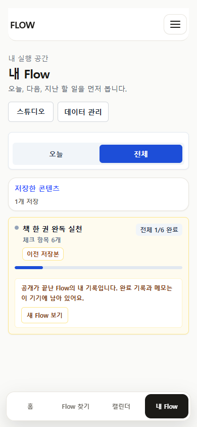
대체 Flow 링크와 기록 보존 상태 확인
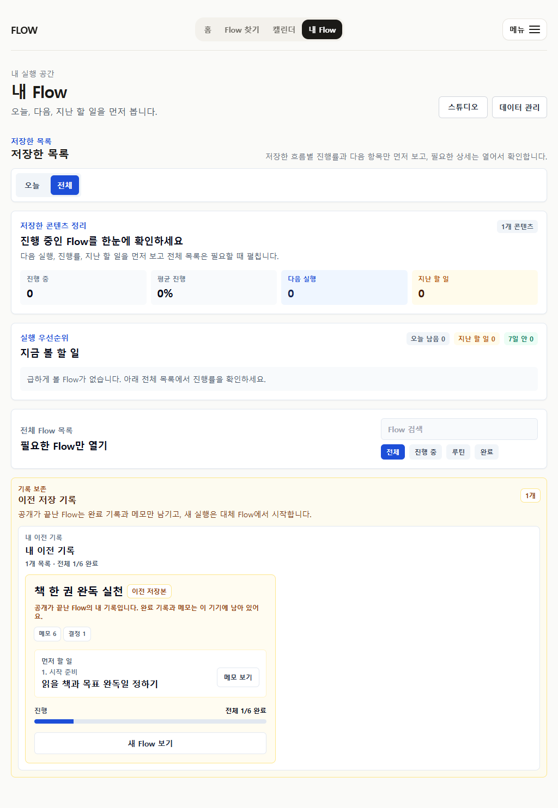